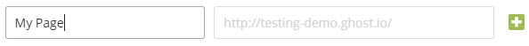

Table of Contents
A. Theme Information
- Name: Scriptor - Ghost Theme
- Description: Minimal and responsive content focus one column Ghost theme
- Current Version: 1.1
- Released: 02/28/2014
- Creator: JustGoodThemes.com
- Ghost version: 0.5.10
1. Key Features
- Retina ready
- Embedded Tweets & Facebook Status support
- Font Awesome icons (retina ready)
- Mobile first & fully responsive (wide, normal, narrow, mobile)
- Clean well commented code, easy to customize
- Google fonts (Droid Serif, Lato)
- Featured image support
- Disqus commenting
2. Theme Structure
Here's an overview of the theme file structure.
.
├── /assets
| ├── /css
| ├── style.css
| ├── /fonts
| ├── /images
| ├── /js
| ├── custom.js
| ├── jquery.fitvids.js
├── /partials
| ├── comments.hbs [Add your Disqus user name here]
| ├── footer.hbs [Edit the social links & copyright information here]
| ├── header.hbs
| ├── loop.hbs
| ├── navigation.hbs
├── author.hbs
├── default.hbs
├── index.hbs
├── package.json
├── page.hbs
├── post.hbs
├── tag.hbsB. How to Upload a Theme to Your Ghost Blog - top
1. Upload a Theme to Self Hosted Ghost
- 1. Locate the theme directory within the download files. It can be found at theme/Scriptor.
- 2. Login to FTP/SFTP of your blog, or the file browser of your provided hosting service.
- 3. Navigate to the /content/theme directory within your Ghost installation.
- 4. Upload the Scriptor directory found in step one into the remote /content/theme directory.
- 5. Restart your Ghost service. The process for this will change dependent on your provider. If you are unaware how to restart the service please raise a support issue with your host.
- 6. Login to your Ghost admin panel. This can be found at yourdomain.com/ghost.
- 7. Navigate to the Settings > General tab.
- 8. In the Theme drop down, select the newly installed Scriptor Theme. Click Save to save the theme changes.
2. Upload a Theme to Ghost.io
- 1. Login to your Ghost.org user panel. Visit Ghost.org and enter your login credentials.
- 2. From your Ghost(Pro) dashboard, select the Settings (“gear”) icon to the right of the “Write a Post” button on the blog you wish to upload the theme.
- 3. In your blog’s control panel, you can either “drag & drop” Scriptor theme zip file into the “Add a Theme” drop zone, or click on the drag & drop zone to launch the traditional file upload prompt.
- 4. Upload the theme and Save All Blog Settings. You may have to activate the theme in your ghost admin panel.
C. Theme Features - top
1. Static Pages
In order to create a static page you create a new post, just like you would any other post. Once you have opened up the new post, there is a cog wheel icon next to where it says "Save Draft" or "Update Post" depending on if you have published the post or not. Click on that cog, and check the "Turn this post into a static page" box. This will convert your post to a static page.
2. Navigation
You can add, edit, delete and reorder menu links on your Ghost blog, directly from the navigation tool within the blog admin area, located at /ghost/settings/navigation/.
To include a static page on your navigation menu, first type the name of the page as you’d like it to appear on your menu in the label field.

Next, click inside the URL field of the menu item. The blog URL will auto-populate with http://yourdomain.com/. You will need to add in the page slug after the final /. Once satisfied with your page link, click the blue Save button to add the page to the navigation menu.
4. Disqus Comments
Scriptor Theme comes with Disqus commenting built-in, you just need to have a Disqus account (you can create it at Disqus.com). To enable commenting, open up partials folder (Ghost/content/themes/scriptor/partials) and find the file comments.hbs. Alter the line "disqus_shortname = 'my_disqus_shortname';" to match your Disqus account shortname.
If you wish to disable commenting, just remove all code from the file and save it.
5. Google Analytics
Requires an account, which can be obtained for free at http://analytics.google.com. To enable Google Analytics, you need to copy and paste the Google Analytics tracking code into the default.hbs inside the <head> tag, just below the {{ghost_head}} and above </head>.
6. Social Media Links (Footer)
The social media icons/links in the footer can be altered within the footer.hbs partial within the partials folder (Ghost/content/themes/scriptor/partials) of the theme. For example, to add your Twitter account, change the line {{! Add Twitter handle }} to your Twitter username and save it. It should work straight away. If it doesn't just restart your Ghost.
7. Copyright Information (Footer)
You will find all copyright information in the <div> with the class "site-info" in the footer.hbs file within the partials folder (Ghost/content/themes/scriptor/partials) of the theme. If you want to remove copyright information in the footer simply delete the <div> with the class "site-info" and all code in it and save the file.
D. Support - top
The documentation included provides all the information needed to get the theme installed and customized. However, if you have any questions you can email us at justgoodthemes@gmail.com, and we will be happy to help you.
If you have any bug reports, or feature requests, please let us know!
E. Updates - top
As Ghost platform grows, so will this theme. We’re dedicated to keeping our Scriptor up to date.
F. Credits - top
We have used the following scripts, fonts or other files as listed.
- Droid Serif Font: https://www.google.com/fonts/specimen/Droid+Serif
- Lato Font: https://www.google.com/fonts/specimen/Lato
- Font Awesome Icons: http://fontawesome.io
- FitVids: http://fitvidsjs.com/